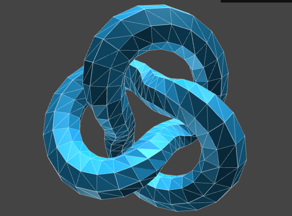

TEST PAGE - Three.js and AR.js Examples
Torus Knot
Visual test of TorusKnot with different type of marker:
Hiro
Kanji
My Marker1
My Marker2
My Marker3

Test Hiro Marker
Test Kanji Marker
Test My Marker1 Marker
Test My Marker2 Marker
Test My Marker3 Marker